6.2. シミュレータでの実行#
ここでは、シミュレータでPick & Placeサンプルコードを実行する方法について説明します。
6.2.1. Dockerコンテナの準備#
任意の場所で以下を実行し、ワークスペースの作成と必要なパッケージの配置を行ってください。
$ git clone --recursive -b <ROS_DISTRO> git@github.com:hsr-project/pick_and_place_example.git
以下を実行し、Dockerイメージをビルドしてください。
/path/to/にはpick_and_place_exampleまでのパスを入れてください。注釈
yolox_wsのビルドには時間がかかります。yolox_ws$ cd /path/to/pick_and_place_example/yolox_ws/docker $ docker compose build
hsrb_pnp_ws$ cd /path/to/pick_and_place_example/hsrb_pnp_ws/docker $ docker compose build
ワークスペース内のCycloneDDS設定をします。 各設定ファイルを変更してください。
yolox_ws/docker/docker-compose.yaml
ROS_DOMAIN_IDを各自で設定してください。environment: - DISPLAY=$DISPLAY - RMW_IMPLEMENTATION=rmw_cyclonedds_cpp - CYCLONEDDS_URI=/root/ros2_ws/docker/cyclonedds_profile.xml - ROS_DOMAIN_ID=XXX - TZ=Asia/Tokyo
hsrb_pnp_ws/docker/docker-compose.yaml
ROS_DOMAIN_IDには上記ファイルで設定した値をセットしてください。environment: - DISPLAY=$DISPLAY - RMW_IMPLEMENTATION=rmw_cyclonedds_cpp - CYCLONEDDS_URI=/home/hsrb/ros2_ws/docker/cyclonedds_profile.xml - ROS_DOMAIN_ID=XXX - IGN_GAZEBO_RESOURCE_PATH=/workdir/src/hsrb_pnp_pkgs/hsrb_pick_and_place/models/
Dockerコンテナの起動
以下を実行し、Dockerコンテナの起動を行ってください。 なお、DockerコンテナのGUIを表示可能にするため、
xhost +も実行します。yolox_ws$ xhost + $ cd /path/to/pick_and_place_example/yolox_ws/docker $ docker compose up -d
hsrb_pnp_ws$ cd /path/to/pick_and_place_example/hsrb_pnp_ws/docker $ docker compose up -d
以下を実行し、
hsrb_pick_and_placeとyolox_ros_onnx_graspnetの2つのコンテナが正常に起動されたことを確認してください。$ docker ps -a CONTAINER ID IMAGE COMMAND CREATED STATUS PORTS NAMES c182893db203 hsrb_pick_and_place:latest "/ros_entrypoint.sh …" 6 minutes ago Up 6 minutes hsrb_pick_and_place bef48e709dd0 yolox_ros_onnx_graspnet:latest "/opt/nvidia/nvidia_…" 7 minutes ago Up 7 minutes yolox_ros_onnx_graspnet
6.2.2. Pick & Placeの実行#
ここでは、Pick & Placeの手順について説明します。
以下を実行し、シミュレータを起動してください。
$ docker exec -it hsrb_pick_and_place bash
hsrb@computer:~/ros2_ws$ ./launch_hsrb_pnp_ignition_gz.shシミュレータが起動するとGazeboとRVizの2つの画面が表示されます。
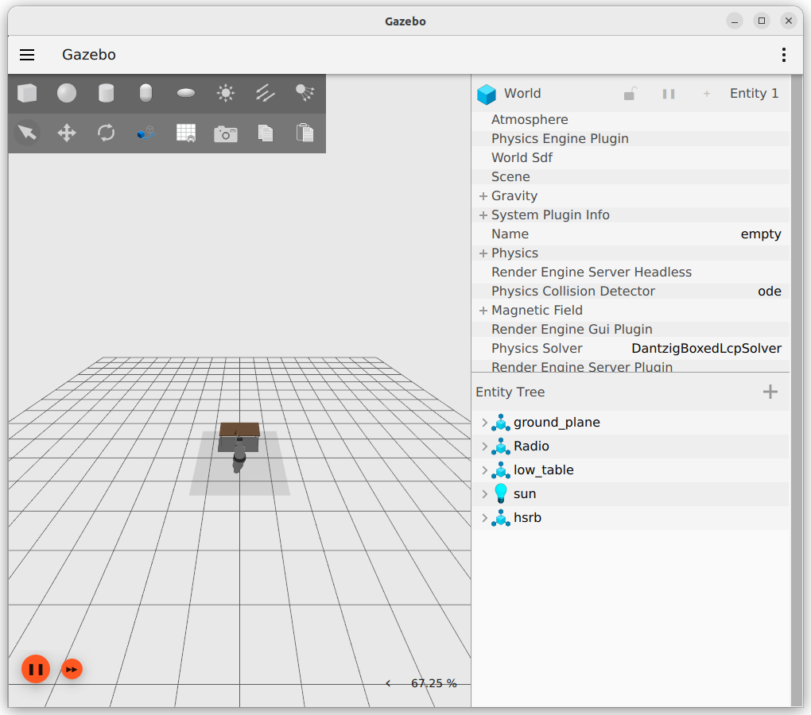
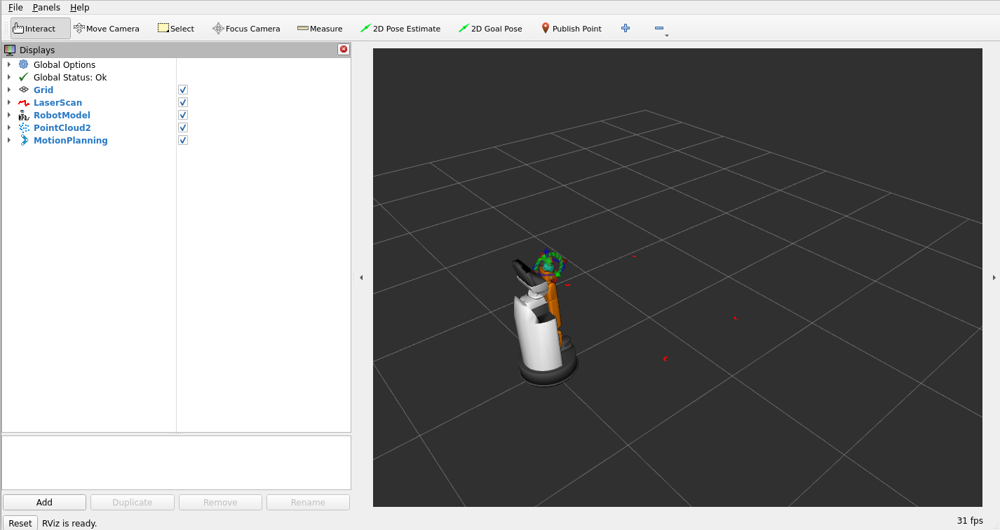
以下を実行し、YOLOXによる画像中からの対象物検出プロセス、 およびGraspNetによる把持姿勢推定プロセスを起動してください。 これらのプロセスは自動的には終了しないため、停止させる場合は停止コマンドを実行してください。
起動コマンド
$ docker exec -it yolox_ros_onnx_graspnet bash
root@computer:~/ros2_ws# cd /workdir root@computer:/workdir# ~/ros2_ws/start_yolox_graspnet_ros.sh
停止コマンド
$ docker exec -it yolox_ros_onnx_graspnet bash
root@computer:~/ros2_ws# ~/ros2_ws/stop_yolox_graspnet_ros.sh
コンテナが起動すると以下のようなYOLOXの画面が表示されます。
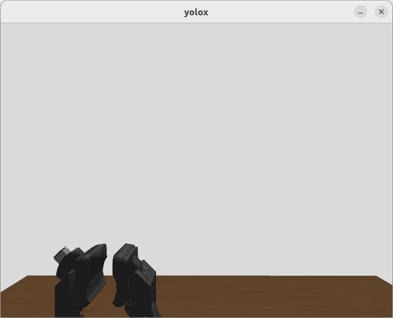
以下を実行し、Pick & Place制御システムを起動してください。
$ docker exec -it hsrb_pick_and_place bash
hsrb@computer:~/ros2_ws$ ./start_hsrb_pick_and_place.sh以下を実行し、対象物にHSRのカメラを向けてください。
注釈
hsrb_pnp_ws/trigger_gaze.sh に記載されているコマンドの
{pos: [0.5, 0.12, 0.75]}パラメータは、 HSRのbase_linkを基準とした3次元座標で、単位は[m]です。必要に応じて調整し、対象物がHSRの視野内に入るようにしてください。
$ docker exec -it hsrb_pick_and_place bash
hsrb@computer:~/ros2_ws$ ./trigger_gaze.sh実行すると、HSRは以下のように対象物を認識します。
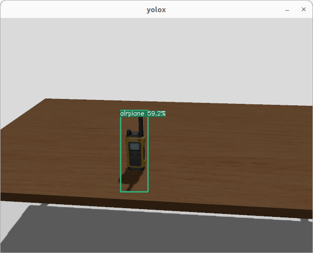
以下を実行し、Pick & Placeを実行させるコマンドを起動してください。
注釈
hsrb_pnp_ws/trigger_pnp.sh に記載されているコマンドの
{pos: [0.6, -0.28, 0.608]}パラメータは、world_frame_idを基準とした3次元座標で、単位は[m]です。対象物を認識して把持ができるよう、HSRの視野に対象物を配置してください。
また、
world_frame_idは環境によって異なり、シミュレーション環境ではworld、実機環境ではmapとなります。対象物を置く時のグリッパの姿勢は、デフォルトでは対象物を掴む時と同じ姿勢です。
posパラメータに続けて3次元のパラメータをラジアン単位で指定することで 掴む時の姿勢をデフォルトから変位させることができます。例：
"{pos: [0.6, -0.28, 0.608, 0.175, 0.0, 0.0]}"
$ docker exec -it hsrb_pick_and_place bash
hsrb@computer:~/ros2_ws$ ./trigger_pnp.sh実行すると、HSRは以下のように動作します。
動作
画面
動作前
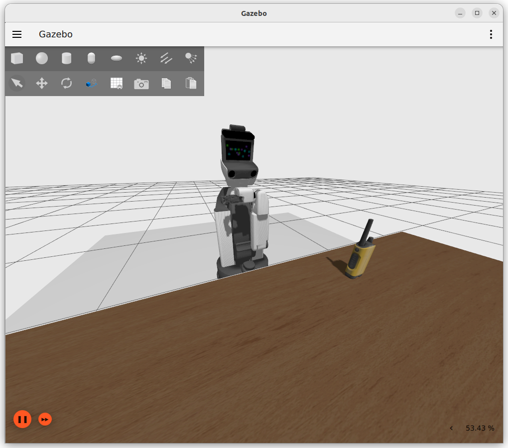
対象物に接近する
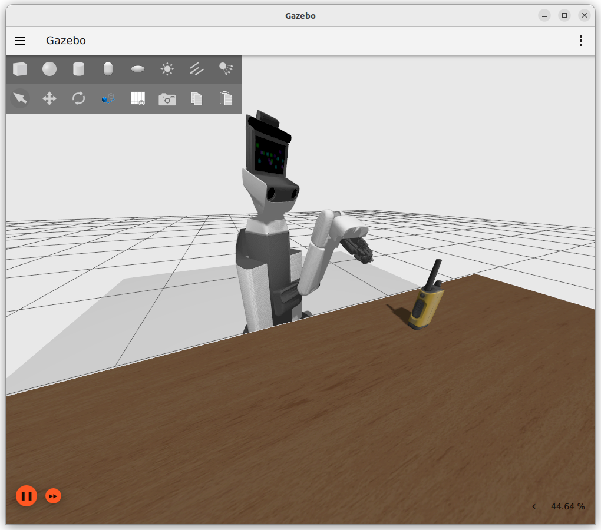
グリッパを開く
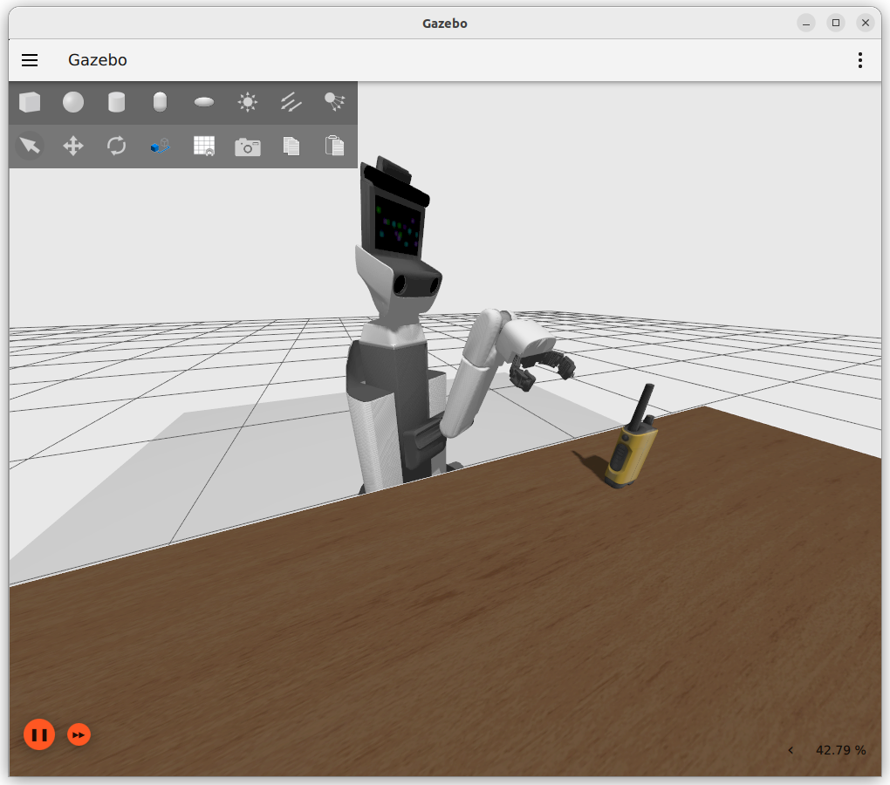
対象物を掴む
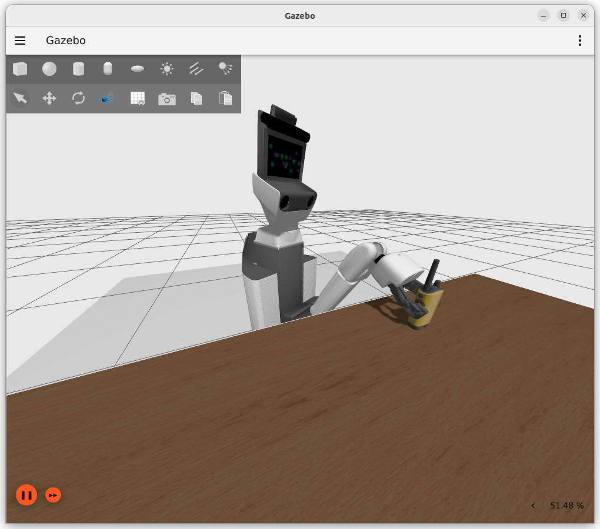
後退する
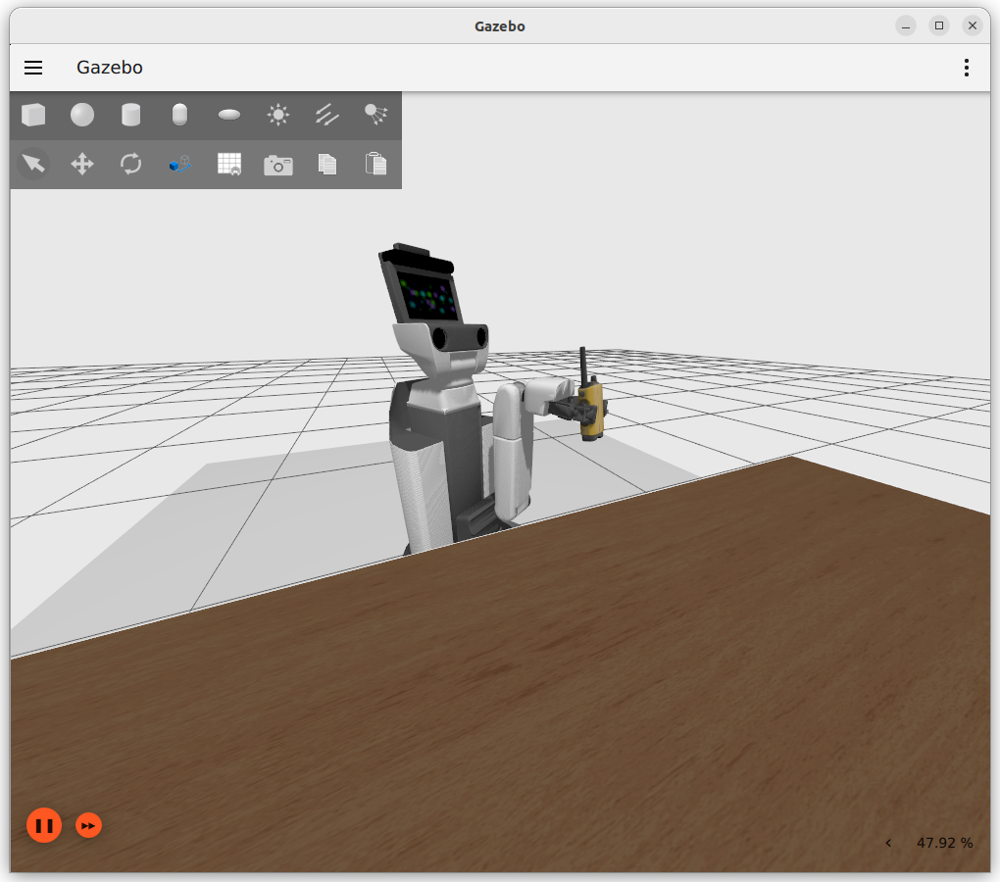
右に移動する
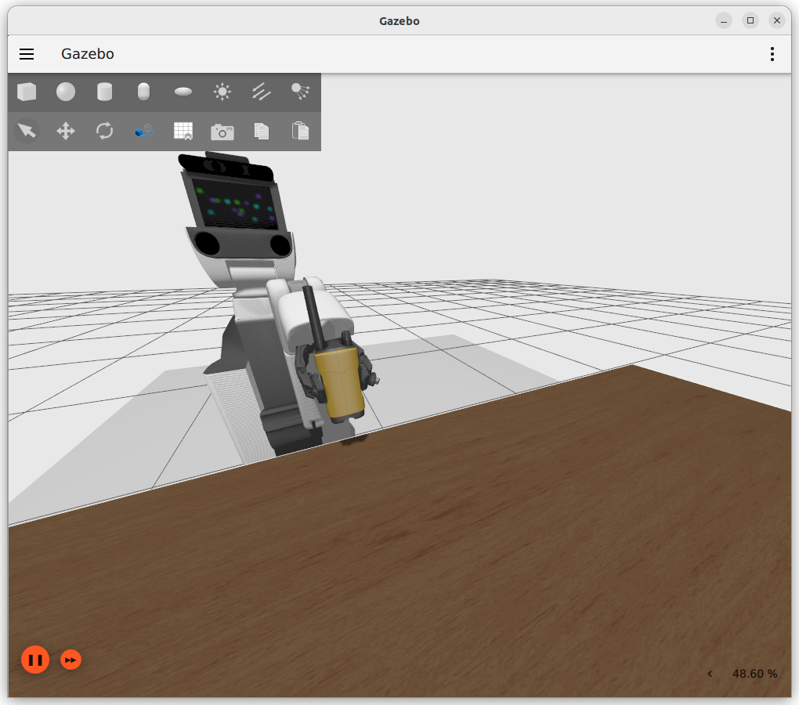
対象物を置く
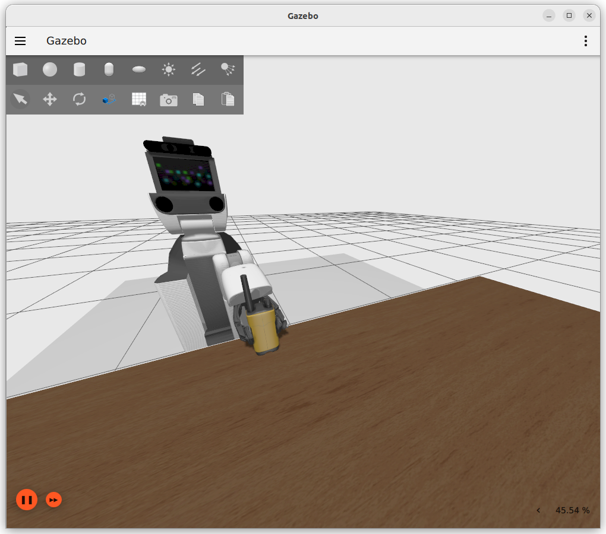
後退する
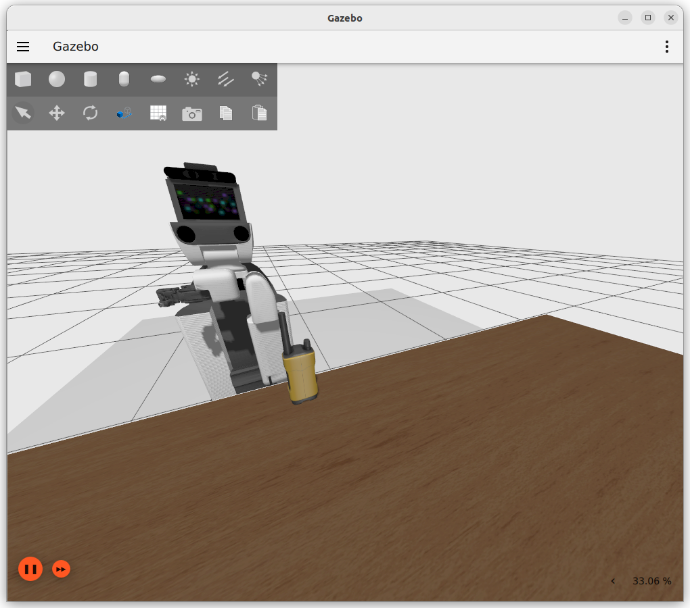
{kind=link}
{kind=link}
{kind=link}
{kind=link}
{kind=link}
{kind=link}
{kind=link}
{kind=link}
{kind=link}
{kind=link}
{kind=link}
{kind=link}
6.2.3. その他の設定・操作#
初期姿勢への遷移
HSRのアームを初期姿勢に遷移させるには、以下を実行してください。
$ docker exec -it hsrb_pick_and_place bash
hsrb@computer:~/ros2_ws$ cd /workdir hsrb@computer:~/workdir$ source install/setup.bash hsrb@computer:~/workdir$ ros2 service call /arm_reset_trigger std_srvs/srv/Trigger "{}"
把持面（近側・遠側）の自動切り替え機能
把持姿勢推定(GraspNet)の出力は、HSRの現在位置に対して近い面または、遠い面からの把持姿勢を返します。 遠い面からの把持姿勢を返した場合に、自動的に対象物の反対の近い面に切り替えて、把持姿勢を返すという機能があります。 以下ではその機能のON/OFFを切り替えることができます。
機能のON (デフォルト)
$ docker exec -it hsrb_pick_and_place bash
hsrb@computer:~/ros2_ws$ cd /workdir hsrb@computer:~/workdir$ source install/setup.bash hsrb@computer:~/workdir$ ros2 service call /graspnet_pose_adjust std_srvs/srv/SetBool "{data: true}"
機能のOFF
$ docker exec -it hsrb_pick_and_place bash
hsrb@computer:~/ros2_ws$ cd /workdir hsrb@computer:~/workdir$ source install/setup.bash hsrb@computer:~/workdir$ ros2 service call /graspnet_pose_adjust std_srvs/srv/SetBool "{data: false}"
以上でPick & Placeは完了です。